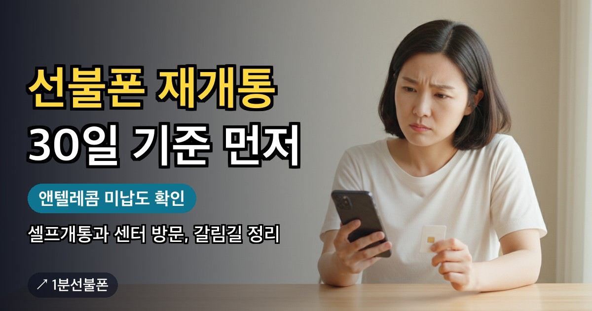

예전에 쓰던 앤텔레콤 선불폰 번호를 정리했거나 번호가 끊긴 뒤 다시 개통하려는 분이 먼저 볼 것은 두 가지입니다. 직접 번호를 정리(해지)한 지 30일이 지났는지, 그리고 앤텔레콤에 남은 미납이 있는지입니다. 이 두 가지로 셀프개통이 되는지, 센터를 가야 하는지, 미납부터 확인해야 하는지가 갈립니다. 충전을 하지 않아 번호가 끊긴 경우가 30일 기준에 들어가는지는 안내가 없어 카톡 채널로 확인해야 합니다. 이 글의 재개통은 예전 번호를 되살리는 일이 아니라 앤텔레콤에서 새로 개통하는 일을 뜻하며, 갈림길을 표 하나로 정리했습니다.
- 직접 번호를 정리(해지)한 지 30일 이내면 셀프개통이 안 되고 센터 방문 개통으로 진행, 충전을 안 해 끊긴 경우가 여기 들어가는지는 카톡 채널 확인
- 앤텔레콤에 미납이 남아 있으면 선불도 개통 불가, 다른 통신사 미납은 걸리지 않음
- 둘 다 해당하지 않고 셀프개통 대상(간편인증서 있음, 외국인·미성년자·법인 아님)이라면 처음과 같은 순서의 셀프개통, 준비물도 처음과 같음
- 예전 번호를 다시 받을 수 있는지는 공식 안내가 없어 카톡 채널로 확인
- 다시 개통하면 당일 충전부터, 유심 6,600~8,800원·요금제 12,100원부터·준비되면 개통까지 5분
다시 개통하기 전에 확인할 두 가지
예전 번호를 쓰던 사람이 다시 개통하는 길도 새로 가입하는 사람과 크게 다르지 않습니다. 다만 앤텔레콤 이용 이력이 있으면 아래 두 가지가 길을 바꿉니다. 공식 FAQ에 재개통만을 위한 절차가 따로 있지는 않아서, 셀프개통 불가 대상과 미납 규정을 이어 붙여 정리했습니다.
| 상황 | 가는 길 |
|---|---|
| 앤텔레콤 번호를 직접 정리(해지)한 지 30일이 안 됐다 | 셀프개통이 안 되므로 센터 방문 개통(충전을 안 해 끊긴 경우가 여기에 들어가는지는 카톡 채널 확인) |
| 앤텔레콤에 미납 요금이 남아 있다 | 선불이어도 개통 불가, 미납부터 확인 |
| 둘 다 해당하지 않는다 | 처음과 같은 순서로 셀프개통 |
셋째 줄은 외국인(여권)·미성년자·법인처럼 원래 셀프개통이 안 되는 대상이 아닐 때의 이야기입니다. 불가 대상 전체는 선불폰 셀프개통 시간 글에 모여 있습니다.
30일 안이라면 셀프개통 대신 센터 방문
공식 FAQ가 셀프개통 불가 대상으로 꼽는 다섯 가지 중 하나가 30일 이내에 앤텔레콤 번호를 해지하신 경우입니다. 이 경우에는 센터 내방 개통이 필요하다고 안내합니다. 신청 화면 대신 센터에서 개통하라고 안내하는 것입니다.
센터는 예약이 먼저입니다. 카톡 상담으로 시간과 장소를 예약하고 실물 신분증을 들고 가면 개통을 마친 뒤 충전까지 도와줍니다. 센터별 접수 가능 여부와 방문 시간은 미리 확인하세요. 센터 정보를 본 것만으로 예약이 확정되지는 않습니다. 공식 FAQ는 앤텔레콤 미납이 있으면 개통 불가라고만 안내하고 셀프개통과 센터 방문을 가르지 않으니, 미납이 남아 있다면 센터에서도 그 정리가 먼저라고 보는 편이 안전합니다. 가까운 곳은 센터 찾기에서, 당일 흐름은 선불폰 방문 개통에서 볼 수 있습니다.
짚어 둘 점이 둘 있습니다. 첫째, FAQ는 「해지하신 경우」라고만 적어서 충전을 하지 않아 번호가 저절로 끊긴 경우도 30일 기준에 들어가는지는 근거가 없습니다. 둘째, 신규가입은 새 번호를 부여받는 방식이라 예전 번호를 다시 받을 수 있는지도 FAQ에 안내가 없습니다. 둘 다 이 글에서 단정하지 않으니, 헛걸음하기 전에 카톡 채널로 지금 상태를 알려 주고 확인하세요.
다른 통신사 미납과 앤텔레콤 미납은 다르게 봅니다
선불폰은 개통할 때 신용조회를 하지 않아서 미납·연체·신용불량 이력이 있어도 본인 명의로 개통할 수 있다고 안내합니다. 공식 FAQ도 선불 요금제는 다른 통신사에 미납이 있어도 개통할 수 있다고 답합니다.
걸리는 것은 앤텔레콤 자체 미납 하나입니다. 앤텔레콤에 낼 요금이 남은 채 쓰기를 멈춘 회선이 있었다면, FAQ가 안내하는 대로 선불이어도 개통이 되지 않습니다. 이럴 때는 새로 신청해 보기보다 그 미납부터 확인하는 것이 순서이고, 어떻게 정리하는지는 FAQ에 안내가 없으니 카톡 채널에 사정을 알려 주세요.
다른 통신사 요금이 밀려 있어서 걱정이라면 미납 선불폰 글에서 상황별로 볼 수 있습니다.
충전을 놓쳐 끊겼다면, 이번엔 개통 당일 충전부터
선불폰은 충전이 끊기면 번호도 단계적으로 끊깁니다. 공식 FAQ 기준으로 잔액 소진일로부터 15일간은 수신이 가능하고 15일 이후 30일이 경과하면 직권해지됩니다. 지금 번호가 어느 단계인지 가늠하는 용도로만 보세요.
다시 개통한다면 같은 일이 되풀이되지 않게 개통 당일까지 충전을 마쳐야 합니다. 개통할 때 충전은 필수이고, 하지 않으면 다음 날 번호가 정지되거나 해지될 수 있다고 FAQ는 안내합니다. 신청 시각을 잡을 때 충전할 시간까지 넣어 두세요. 개통한 날 안에 끝내는 요령은 선불폰 개통 당일 충전 글에 있고, 이 글은 충전 방법을 다루지 않습니다.
다시 개통할 때 준비물과 순서
30일이 지났고 앤텔레콤 미납도 없다면 순서는 처음 개통할 때와 같습니다.
- 본인 명의 간편인증서 — 웹 신청은 토스·카카오 등의 인증서로 본인 확인을 합니다. 인증서가 없다면 센터 방문 개통으로 진행합니다.
- 앤텔레콤 유심 — 다른 통신사에서 쓰던 유심은 다시 쓸 수 없습니다. KT망은 민트색 바로유심(CU·GS25·이마트24), LG U+망은 검은색 모두의원칩(이마트24·B마트·지하철 역 자판기)이고 CU·GS25에는 LG망 유심이 없습니다. 편의점 유심은 6,600~8,800원입니다. 예전에 쓰던 앤텔레콤 유심을 다시 쓸 수 있는지는 안내가 없으니 카톡 채널에 먼저 물어보세요.
- 안면인증과 본인인증 — 2026년 10월부터는 안면인증을 반드시 통과해야 개통할 수 있습니다. 형광등 빛이 반사되지 않도록 하고, 고개를 돌릴 때 시선도 고개와 함께 돌리세요.
- 유심 정보 입력과 개통하기 — 요금제는 12,100원부터 있고 가입비는 없습니다. 유심이 준비되어 있으면 개통까지 5분이면 끝납니다.
- 당일 충전과 확인 전화 — 개통한 날 안에 충전하고, 웹으로 직접 개통했다면 뒤이어 오는 본사 확인 전화(해피콜)를 받으세요. 받지 못하면 번호가 해지될 수 있습니다.
자주 묻는 질문
선불폰 재개통은 셀프개통으로 되나요?
앤텔레콤 번호를 직접 정리(해지)한 지 30일이 지났고 앤텔레콤 미납이 없으며 외국인(여권)·미성년자·법인 같은 셀프개통 불가 대상이 아니라면 처음과 같은 순서로 셀프개통합니다. 30일 이내라면 센터 방문 개통으로 진행합니다.
정리한 지 30일이 안 됐으면 어디서 개통하나요?
공식 FAQ는 30일 이내에 앤텔레콤 번호를 해지한 경우를 셀프개통 불가 대상으로 두고 센터 내방 개통을 안내합니다. 카톡 상담으로 센터를 예약하고 실물 신분증을 들고 방문해 진행하세요. 센터별 접수 가능 여부와 방문 시간은 미리 확인해야 하고, 앤텔레콤 미납이 남아 있으면 센터에서도 개통이 어려울 수 있습니다.
다른 통신사 요금이 밀려 있어도 다시 개통되나요?
선불 요금제는 다른 통신사에 미납이 있어도 개통할 수 있다고 공식 FAQ가 안내합니다. 다만 앤텔레콤 자체 미납이 있으면 개통이 되지 않습니다.
앤텔레콤에 미납이 남아 있는지는 어떻게 확인하나요?
공식 FAQ는 앤텔레콤 자체 미납이 있으면 선불도 개통되지 않는다고만 안내하고, 미납이 남았는지 확인하는 방법이나 정리하는 방법은 따로 안내하지 않습니다. 새로 신청해 보기 전에 카톡 채널로 사정을 알려 확인하세요.
예전에 쓰던 번호를 다시 받을 수 있나요?
신규가입은 새 번호를 부여받는 방식이고, 예전 번호를 다시 받을 수 있는지는 공식 FAQ에 안내가 없어 이 글에서 단정하지 않습니다. 같은 번호가 꼭 필요하다면 신청하기 전에 카톡 채널로 문의하세요.
같이 보면 좋은 글

선불폰 개통 당일 충전 — 번호를 지키는 첫날 할 일과 놓치면 생기는 일
선불폰은 개통하기를 누른 뒤에도 그날 해야 할 일이 남아 있습니다. 앤텔레콤 공식 FAQ는 개통할 때 요금…

선불폰 방문 개통 — 어디로, 무엇을 들고, 어떤 순서로 가나
온라인 인증이 막혔거나 직접 얼굴을 보고 개통하고 싶다면 방문 개통이 길입니다. 그런데 집 앞 KT·LG…
미납 선불폰, 연체·신용불량이어도 개통되는 이유
통신비를 못 내 번호가 정지됐거나 새 개통이 막힌 상태라면 선불폰을 확인해보세요. 선불폰은 요금을 먼저…

선불폰 셀프개통 시간 — 가입 유형별 가능 시간과 안 되는 날 정리
선불폰 셀프개통은 밤낮없이 열려 있는 서비스가 아닙니다. 앤텔레콤 안내 기준으로 신규가입은…
최종 업데이트: